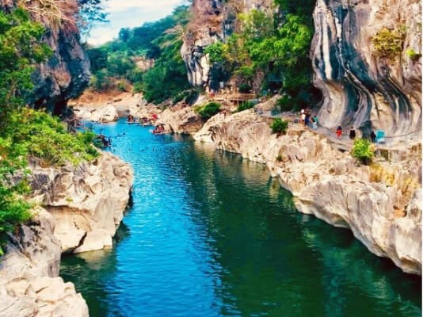

History
Nueva Ecija is a province located in the Central Luzon region of the Philippines. Its history is rich and diverse, reflecting the various influences that have shaped the region over the centuries. The area that is now Nueva Ecija was originally inhabited by indigenous peoples such as the Ilongots and the Gaddangs. Spanish colonization began in the 16th century, and Nueva Ecija was initially part of Pampanga province. It was established as a separate province in 1705, with its capital in Baler (now in Aurora province). The province was named after the town of Ecija in Spain. During the Spanish colonial period, Nueva Ecija played a significant role in the Philippine Revolution against Spanish rule. It was the site of several key battles and uprisings, including the Battle of Zaragoza in 1897, where Filipino revolutionaries led by General Mariano Llanera defeated Spanish forces. In 1898, the Philippines declared independence from Spain, leading to the Philippine-American War. Nueva Ecija continued to be a battleground during this conflict, with both Filipino and American forces vying for control of the province. During the American colonial period, Nueva Ecija became an important agricultural center, known for its vast rice fields and fertile lands. The province played a crucial role in supplying rice to other parts of the country. In the 20th century, Nueva Ecija witnessed significant development and modernization. Infrastructure projects such as roads, bridges, and irrigation systems were constructed to support agricultural growth. The province also became known for its contributions to the Philippine economy, particularly in the fields of agriculture and industry. Today, Nueva Ecija remains an important agricultural hub in the Philippines, known as the "Rice Granary of the Philippines" due to its large rice production. Its rich history and cultural heritage continue to be celebrated, with various historical sites and landmarks serving as reminders of its past.
Geography
Nueva Ecija is a province located in the Central Luzon region of the Philippines. It is situated in the central part of Luzon Island and is bordered by several provinces, including Pangasinan, Nueva Vizcaya, Aurora, Tarlac, Pampanga, and Bulacan. The geography of Nueva Ecija is characterized by vast plains, rolling hills, and mountain ranges. The province is part of the Central Luzon Plain, one of the largest and most fertile agricultural areas in the country. The plains are crossed by several rivers and tributaries, including the Pampanga River, which serves as a vital water source for irrigation and agriculture. Mountains and hills are found in the northern and eastern parts of Nueva Ecija, including the Caraballo Mountains and the Sierra Madre Mountain Range. These mountainous areas are covered with forests and provide a contrast to the flat plains that dominate much of the province. Nueva Ecija has a tropical climate characterized by two distinct seasons: the dry season, which typically lasts from November to April, and the wet season, which occurs from May to October. The province experiences high temperatures and humidity throughout the year, with occasional typhoons during the rainy season. The province's natural landscape includes several notable attractions, such as national parks, waterfalls, and scenic viewpoints. One of the most famous natural landmarks is Minalungao National Park, known for its limestone cliffs, clear river waters, and lush greenery. Overall, the geography of Nueva Ecija plays a crucial role in shaping the province's economy, culture, and way of life, with its fertile plains supporting agriculture and its natural beauty attracting tourists and outdoor enthusiasts.
Demographics
Economy
The economy of Nueva Ecija is primarily agricultural, with rice farming being the dominant industry. Due to its vast plains and fertile lands, the province is often referred to as the "Rice Granary of the Philippines." Rice production is not only a significant economic activity but also a cultural cornerstone of the province. Aside from rice farming, other agricultural products cultivated in Nueva Ecija include corn, vegetables, fruits, and various high-value crops. Livestock and poultry farming also contribute to the agricultural sector. In recent years, there have been efforts to diversify the province's economy beyond agriculture. The manufacturing sector has seen some growth, with industries such as food processing, garments, and furniture production gaining traction. Small and medium enterprises (SMEs) play a crucial role in driving economic activity in Nueva Ecija, contributing to job creation and income generation. The province also benefits from its strategic location within the Central Luzon region, which offers opportunities for trade and commerce. Nueva Ecija is traversed by major highways and is accessible from key urban centers such as Metro Manila. This connectivity facilitates the movement of goods and people, supporting trade and business development. Tourism is another emerging sector in Nueva Ecija, although it is still in its early stages. The province boasts natural attractions such as national parks, waterfalls, and historical sites that have the potential to attract visitors. Efforts to promote tourism and improve infrastructure are underway to harness this potential further. Overall, while agriculture remains the backbone of Nueva Ecija's economy, there are ongoing efforts to diversify and strengthen other sectors to promote sustainable development and economic growth in the province.
Tourism and Attractions
Nueva Ecija offers a range of attractions that showcase its natural beauty, cultural heritage, and historical significance. Here are some notable tourist destinations and attractions in the province:
- Minalungao National Park 
- PMP Paradise Farm
- Paasa Peak
- Capones Island
- Pantabangan Dam
These is the few examples of the many attractions that Nueva Ecija has to offer. Whether you're interested in nature, history, or cultural experiences, the province has something for every traveler to enjoy.
Schools and Universities
Nueva Ecija is home to a variety of schools ranging from preschools to universities. Here are some notable educational institutions in the province:
- Central Luzon State University
- Central Mindanao University
- Palawan State University
- Bulacan State University
- Western Mindanao State University
These are the few schools and universities in Nueva Ecija. The province has a vibrant educational sector that caters to students at all levels and provides opportunities for academic and personal growth.